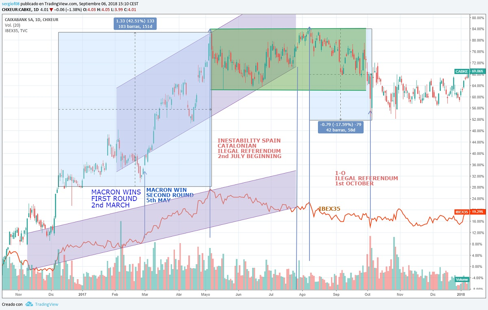

A comienzos del año empezo una de las mayores turbulencias en los valores catalanes en toda la historia de la bolsa española. Esto fue debido al intento de las instituciones catalanas de celebrar un referendum de manera clandestina en la que solo votaría una parte de la sociedad catalana. Esto tensaría mucho el precio de las firmas y valores catalanes, debido al futuro castigo de sus clientes.
Las consecuencias tardarían en llegar pero segun se iban lanzando mensajes por parte de ciertos actores pertenecientes al mundo independentista la capitalización de las empresas con sede en Cataluña empezarían a notar un serio retroceso.
Y es que Cataluña gracias al apoyo del estado español esta última decada a experimentado un crecimiento jamás visto en la historia. En concreto el ultimo año previo al 2017 los bancos y muchas empresas asi como el turismo había experimentado un gran crecimiento, desbordando expectativas y forzando incluso al rechazo de vecinos porque aunque la economía de muchos subiera otros tenían problemas para convivir en sus barrios debido al aumento de precios y a la masificación.
Todas las desventajas de tener una super economía fueron aprovechadas por el sequito independentista bajo la dirección de políticos encausados en corrupción, en malversación y financiación ilegal como son los políticos que han estado gobernando esta comunidad durante decadas. Así pues gracias a las políticas de separación y adoctrinamiento del gobierno catalan en estos últimos 15 años en las escuelas y las instituciones públicas se ha conseguido radicalizar a a aquellos nacionalistas que lo único que querían era más autogobierno y dinero y a otra gente que aun no siendo nacionalistas tienen un situación económica bastante precaria. Este último grupo formado por gente de la clase obrera y trabajadora han asociado sus problemas a la pertenencia a su país y se han ido acercando a otras formaciones como ERC.
ERC siempre en contra de la burguesía catalana y del partido principal de Cataluña ha cambiado su estrategia en los últimos tiempos con el fin de tensar la relación con el los organos del gobierno central habiendose unido a su principal enemigo, Convergencia y Unio. Convergencia en cambio a pesar de tener unas ideas ecónomicas opuestas a ERC a fraguado durante años un mayor peso en la propaganda secesionista que en sus políticas liberales, ya que con este apoyo se blinda ante la acción de la justicia contra casos como el robo del 3% de los impuestos a los principales lideres y familias de la cúpula empezando por los Pujol.
Esta fusión con ERC en un único partido tuvo lugar con la causa de la Justicia contra Arthur Mas en la que el dinero recaudado por los catalanes fue destinado a pagar a los líderes secesionistas en su defensa judicial por los delitos cometidos. Parte de la sociedad catalana pues es complice de estos délitos de evasión fiscal y malversación ya que han apoyado a estos lideres durante años. Si bien todavía no esta muy claro si es debido a la ignorancia o al adoctrinamiento de las instituciones. Como consecuencia se formo el partido Junts Pel Si, cuyos lideres no compartían ideología política a parte del independentismo, estando mezclados la izquierda más republicanda, con la burguesía catalana y la derecha más conservadora.
Una vez fueron las elecciones de este año, gano la formación independentista en numero de escaños, con los votos también del partido antisistema, CUP, cuyas ideas populistas no son vistas con buenos ojos por los demás partidos. Muchas ideas dejarían Cataluña en la miseria absoluta que choca con los ideales de concentración ecónomica de Convergencia, que sueña con liberalizar todos los servicios y cobrar por ellos. Convergencia jamás permitiría que una formación de esta calaña tuviera ningun poder en el parlament pero tensado por la justicia no le quedo otra que aceptar, ya que sino varios lideres hubieran sido encausados y el estar en el gobierno les da protección judicial. Como Artur Mas no pudo presentarse a las elecciones por causas de la justicia encomendaron encabezar las listas a Puigdemont, un hombre poco conocido salvo en la ciudad donde era alcalde.
Con todo esto, el primer paso sería plantear el famoso referendum de su programa electoral y ahi es donde vinieron los problemas ya que primero no tiene competencia para realizar esto ya que debe de pasar por el congreso de los diputados donde apenas cuentan con un 5% de escaños y segundo tendría que tener algun sentido ya que para realizar esto y tendrían que cambiar la constitución española cosa que sería aún más complicado. Viendo que era imposible los lideres realizaron saltarse la ley y ir por libre y utilizaron medios públicos para organizarlo y sufragarlo, llevando un delito bastante grave, a parte del delito de rebelión castigado con penas de 20 años de carcel en el código penal. Para intentar no llevarse ese delito intentaron jugar con las palabras el día que cocinaron los resultados.
Esta situaciones son muy parecidas a otras situaciones de países militaristas y dictaduras del mundo y por ello la Unión Europea se mostro simepre contraria. Otros países enemigos de Europa como Rusia siempre simpatizaron con la idea, sabiendo de los problemas que iban a derivarse tanto economicamente como socialmente. A pesar de contar con un apoyo inferior a la mitad de los catalanes sigueron empeñados y la respuesta del estado llego bastante lenta. Debido a la ineptitud de Rajoy para tomar estos temas tan serios, varios de los culpables de este teatro salieron del país y se libraron de la justicia y otros cuyo código ético es más fuerte se entregaron libremente. Este es el caso de Oriol Jonqueras, un lider que a pesar de tener unas ideas bastante radicales en este tema, ha sido consecuente con sus actos en todo momento y pocas veces ha dicho algo que no sintiera. Es por ello que existe cierta tensión entre los lideres de la burguesía catalana como Puigdemont y los de la izquierda que van a ir a prisión, ya que al final unos han respondido con la cabeza por delante y otros han huído.
Los más perjudicados en este caso han sido los bancos catalanes del IBEX35 como son el Sabadell y Caixabank pero debido a que vivimos en un mundo globalizado aunque algunos no quieran reconocerlo como son aquellos que intentan separarse del resto como si el resto no fuera con ellos pues todos los demás bancos españoles también cayeron y por ende otros valores del IBEX35 alejados de problemas de cataluña. Tanto esta la economía globalizada que el Eurostox también tuvo su caída pero si comparamos como estaba hace un año el DAX30 aleman veremos como se ha mantenido y el IBEX35 ha retrocedido seriamente como un 10% más, siendo parádojico que España presente unos datos de crecimiento mayores que los de Alemania.
En el siguiente gráfico se puede ver el comportamiento de Caixaban en relación con el IBEX35.

© 2016 - All Rights Reserved - Diseñada por Sergio López Martínez
![[Valid RSS]](https://www.feedvalidator.org/images/valid-rss-rogers.png "Validate my RSS feed")